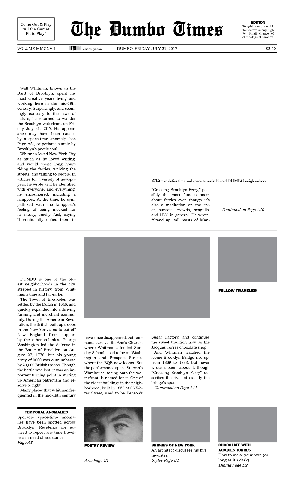
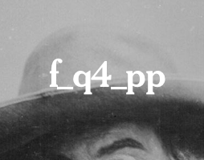
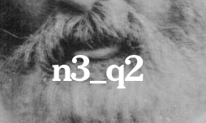
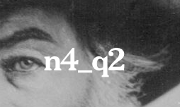
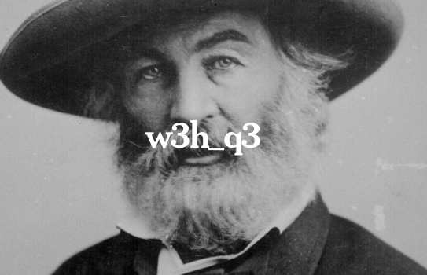
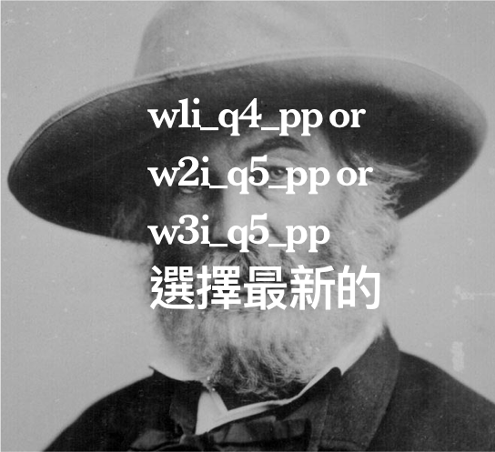

Timeless Poet Lost in Time
Whitman’s Waterfront
BY HILDY JOHNSON
BY HILDY JOHNSON
make light of me.” But if Whitman were writing this today, he thinks the lamppost might say, “I’m much more classy than neon or new-fangled LEDs.”
When Whitman became editor of the Brooklyn Eagle in 1846, he focused on local news, writing a column every day. But he also used the paper as a platform for political opinions about immigration, labor issues, and more. In 1848, when the US government was debating whether new territory won in the Mexican-American War should allow slavery, Whitman argued fiercely in favor of free soil. Since the newspaper owner was pro-slavery, Whitman was fired for his anti-slavery views.
Soon after, Whitman turned from journalism to poetry, beginning work on his masterpiece, Leaves of Grass, a collection of poems about nature, democracy, and love. It includes
nahatta!—stand up, beautiful hills of Brooklyn!” — and today might include the line “Stand up, hipster hangouts of DUMBO!”
Though a theater now instead of a church, St. Ann’s courtyard still retains a spiritual feel.
A new generation of poets snaps along the waterfront
Whitman’s friend Gabriel Harrison seems to have been pulled into modern-day Brooklyn as part of the same space-time anomaly, and was last spotted by local residents in Brooklyn Bridge Park. Harrison was an artist, actor, playwright, photographer, and social activist — a 19th-century James Franco. He opened a photography studio on Fulton Street in 1852, and took the photo of Whitman that was used in the first edition of Leaves of Grass. Harrison believes that Whitman was a poetic genius, saying “A true Bard of Brooklyn, never has another poet let out such a powerful, eternal barbaric yawp!”